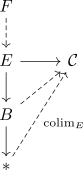

colimit splicing via fiber sequence in anima
Proposition
Let $\mathcal{C}$ be a category and $\varphi: E \rightarrow \mathcal{C}$ a functor for an anima $E$. Suppose $E_b \xrightarrow{\iota} E \rightarrow B$ is a fiber sequence.
Suppose that
\begin{align*}
\mathrm{colim}_B \mathrm{colim}_{E_b} \varphi \iota
\end{align*}
exists.
Then there exists a
Proof
follows from associativity of infinity kan extensions & left kan extension formula for
